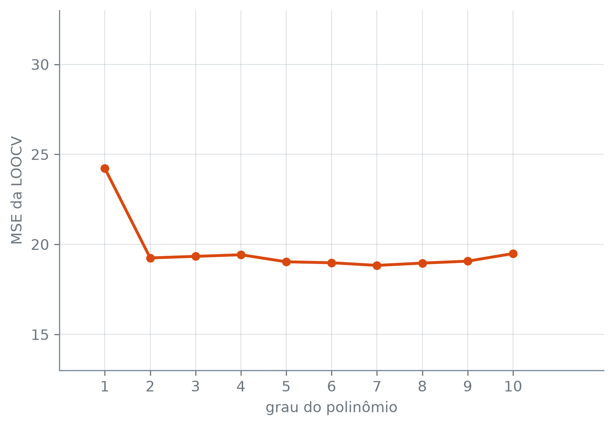

Esta seção corresponde à seção 5.1.2 de James et al. (2023).
Em vez de separar metade das observações para validar, dá para separar uma. Ajusta-se o modelo nas \(n-1\) restantes, prevê-se a que ficou de fora e anota-se o erro. Depois devolve-se essa observação, separa-se a seguinte e repete-se, até que cada uma das \(n\) tenha ficado de fora exatamente uma vez.
A validação cruzada leave-one-out (LOOCV, “deixe um de fora”) ajusta o modelo \(n\) vezes. No ajuste \(i\), a observação \((x_i, y_i)\) fica de fora, o modelo é ajustado nas outras \(n-1\) e produz a previsão \(\hat y_i\) para ela. O erro dessa previsão é \(\mathrm{MSE}_i = (y_i - \hat y_i)^2\), e a estimativa do MSE de teste é a média dos \(n\) erros:
Um \(\mathrm{MSE}_i\) sozinho é uma estimativa péssima do erro de teste: depende de uma observação só, e um carro atípico o joga lá para cima. A média de \(n\) deles não tem esse problema.
A troca ataca as duas desvantagens do conjunto de validação. Cada ajuste usa \(n-1\) observações, quase todas, e não metade; o modelo avaliado fica muito mais parecido com o que se vai usar de fato, ajustado em todas, e o viés para cima encolhe. E não há sorteio nenhum: cada observação sai uma vez, na ordem em que está, e rodar a LOOCV de novo dá exatamente o mesmo número.
A LOOCV nos carros
Os carros são os 392 de Auto da seção 10.1, e polinomial(grau) monta o mesmo polinômio em potencia para prever milhas_por_galao:
treino: 391
real: 18.0
previsto: 19.42
erro ao quadrado: 2.02
X.drop(index=i): uma cópia da tabela sem a linha de rótulo i; a tabela original não muda.
X.iloc[[i]]: a linha na posição i. Com os colchetes duplos, o resultado continua sendo uma tabela de uma linha, a forma que o predict espera; com colchetes simples, sairia uma Series.
O carro da linha 0 é a observação \(i = 1\) da fórmula, e esse erro ao quadrado é o seu \(\mathrm{MSE}_1\). A LOOCV repete os mesmos passos com cada um dos 392 carros e tira a média dos 392 erros:
O scikit-learn faz o mesmo laço com duas peças. O LeaveOneOut diz quais linhas ficam de fora em cada ajuste, e o cross_val_score ajusta, prevê e mede em cada um:
from sklearn.model_selection \import LeaveOneOutfrom sklearn.model_selection \import cross_val_scoreneg_mse ="neg_mean_squared_error"pontuacoes = cross_val_score( polinomial(1), X, y, cv=LeaveOneOut(), scoring=neg_mse,)loocv_reta =-pontuacoes.mean()print("pontuações:",len(pontuacoes))pd.DataFrame( {"laço": [loocv_a_mao],"cross_val_score": [loocv_reta]}, index=["CV(n) da reta"],).round(2)
pontuações: 392
laço
cross_val_score
CV(n) da reta
24.23
24.23
LeaveOneOut(): o esquema de divisão da LOOCV. Com \(n\) linhas, gera \(n\) divisões, cada uma deixando uma linha diferente de fora.
cross_val_score(estimador, X, y, cv, scoring): ajusta e avalia o estimador em cada divisão de cv e devolve um array com uma pontuação por divisão.
cv=LeaveOneOut(): as divisões a usar.
scoring=neg_mse, o texto "neg_mean_squared_error": a pontuação é o MSE com o sinal trocado. O scikit-learn sempre maximiza a pontuação; por isso o erro entra negativo, e o - na frente de pontuacoes.mean() o desfaz.
As duas colunas dão o mesmo número: as 392 pontuações, com o sinal trocado, têm a mesma média que o laço escrito à mão. Para os outros graus, a conta é a mesma, com outro modelo:
loocv = []for grau in graus: pontuacoes = cross_val_score( polinomial(grau), X, y, cv=LeaveOneOut(), scoring=neg_mse, ) cv_grau =-pontuacoes.mean() loocv.append(cv_grau)loocv = np.array(loocv)print("ajustes por grau:", len(X))print("nos dez graus:",len(X) *len(graus))
ajustes por grau: 392
nos dez graus: 3920
São 392 carros, portanto 392 ajustes por grau, e 3.920 ajustes nos dez graus. A média de cada array de 392 erros é a \(\mathrm{CV}_{(n)}\) daquele grau:
pd.DataFrame( {"MSE da LOOCV": loocv.round(2)}, index=pd.Index( graus, name="grau"),)
MSE da LOOCV
grau
1
24.23
2
19.25
3
19.33
4
19.42
5
19.03
6
18.98
7
18.83
8
18.96
9
19.07
10
19.49
grau_minimo_loocv = graus[ np.argmin(loocv)]salto_grau_1_para_2 = ( loocv[0] - loocv[1])faixa = loocv[1:]amplitude_2_a_10 = ( faixa.max() - faixa.min())ganho_sobre_grau_2 = ( loocv[1] - loocv.min())print("menor MSE no grau", grau_minimo_loocv)print("reta menos parábola:",round(float( salto_grau_1_para_2), 2))print("faixa dos graus 2 a 10:",round(float( amplitude_2_a_10), 2))print("parábola menos mínimo:",round(float( ganho_sobre_grau_2), 2))
menor MSE no grau 7
reta menos parábola: 4.98
faixa dos graus 2 a 10: 0.66
parábola menos mínimo: 0.42
A reta erra 24,23; a parábola, 19,25, e o erro cai 4,98 de um grau para o outro. Do grau 2 ao grau 10, as nove estimativas cabem numa faixa de 0,66. O menor MSE da LOOCV cai no grau 7, com 18,83, como aponta o np.argmin: 0,42 abaixo da parábola, contra os 4,98 que a curvatura já tinha tirado.
import matplotlib.pyplot as pltfig, ax = plt.subplots( figsize=(6, 4.2))ax.plot( graus, loocv, color="C1", marker="o", linewidth=2)ax.set_xlabel("grau do polinômio")ax.set_ylabel("MSE da LOOCV")ax.set_xticks(list(graus))ax.set_ylim(13, 33)ax.set_yticks( [15, 20, 25, 30])plt.tight_layout()plt.show()

Figura 1: MSE da LOOCV contra o grau do polinômio em potencia, nos dados Auto. O eixo vertical é o mesmo da figura do conjunto de validação, de 13 a 33.
É uma curva só, e ela não depende de semente. No conjunto de validação da seção 10.1, a curva dependia de quais carros o sorteio pôs de cada lado; aqui não há o que sortear, e a mesma tabela dá sempre a mesma curva. A leitura que ela sustenta: a reta não basta, e depois da parábola o ganho é pequeno.
Leitura para casa
Um ajuste no lugar de 392
A LOOCV custa \(n\) ajustes por modelo. Para regressão por mínimos quadrados, linear ou polinomial, existe um atalho que custa um:
em que \(\hat y_i\) agora vem do ajuste com todas as \(n\) observações, e \(h_i\) é a alavancagem da observação \(i\), da seção 8.6. Sem o denominador, a soma seria a média dos quadrados dos resíduos de treino, que é otimista: cada carro ajudou a traçar a curva que o prevê. O \(1 - h_i\) corrige isso carro a carro, e \(h_i\) mede justamente essa ajuda, isto é, quanto o carro \(i\) puxa o próprio ajuste para perto de si.
Essa leitura de \(h_i\) se confere com uma conta. Primeiro, o ajuste da reta com os 392 carros e o resíduo de cada um:
reta = polinomial(1)reta.fit(X, y)previsto = reta.predict(X)residuo = y - previstoprint("resíduo do carro 0:",round(residuo[0], 2))
resíduo do carro 0: -1.42
Agora, um empurrão: soma-se 1 ao consumo do carro 0, só dele, e a reta é ajustada de novo. Quanto a previsão desse mesmo carro sobe?
O consumo do carro 0 subiu 1, e a previsão dele subiu só uma fração disso: é o quanto ele puxa a reta. Esse número é o \(h_i\) do carro 0. Para não fazer um empurrão e um ajuste por carro, o que custaria de novo 392 ajustes, a seção 8.6 dá a conta que tira todos os \(h_i\) de uma vez, a diagonal da matriz chapéu. Ela usa as colunas que o LinearRegression de fato recebe (a padronização seguida das potências) e uma coluna de 1 para o intercepto:
fit_transform(X): ajusta as transformações de um Pipeline sem estimador final e devolve o resultado delas sobre X. Aqui, a coluna padronizada \(x\); com grau maior, \(x, x^2, \dots, x^{\text{grau}}\).
np.ones(n): um array de n uns, a coluna do intercepto. np.column_stack(lista): junta os arrays da lista lado a lado, como colunas de uma matriz.
np.linalg.inv(M): a inversa da matriz M. np.diag(M): a diagonal de uma matriz quadrada, como array; aqui, os \(h_i\).
O empurrão e a matriz dão o mesmo \(h\) para o carro 0. Com o resíduo e o \(h_i\) de cada carro, o termo da fórmula sai sem nenhum ajuste novo. A tabela o põe ao lado do erro que a LOOCV mediu deixando o carro de fora, nos três primeiros carros:
A coluna termo, que vem do ajuste com os 392, repete a coluna LOOCV, que vem de um ajuste sem o carro. A média dos 392 termos é, portanto, a \(\mathrm{CV}_{(n)}\) da reta:
media = termo.mean()pd.DataFrame( {"laço": [loocv_a_mao],"fórmula": [media]}, index=["CV(n) da reta"],).round(2)
laço
fórmula
CV(n) da reta
24.23
24.23
O que acontece com o termo de um carro cujo \(h_i\) se aproxima de 1?
Para os outros graus, a conta é a mesma, com o polinômio do grau no lugar da reta:
np.where(condicao, a, b): elemento a elemento, a onde a condição vale e b onde não vale. Aqui, escreve "< 1e-6" em cada grau cuja diferença fica abaixo de um milionésimo.
A coluna LOOCV vem dos 392 ajustes por grau; a coluna fórmula, de um ajuste só. Nos dez graus, as duas coincidem até a sexta casa, e a coluna diferença mostra que nenhuma passa de um milionésimo. A diferença que sobra vem do arredondamento, não da fórmula: a fórmula é exata, e os dois caminhos fazem contas diferentes, cada um com seus próprios erros no último dígito do ponto flutuante.
Dentro da LOOCV, o StandardScaler é reajustado a cada um dos 392 ajustes, com a média e o desvio padrão de 391 carros; na fórmula, a padronização usa os 392. Por que a igualdade sobrevive? Porque padronizar é trocar \(x\) por \((x - m)/s\), e um polinômio de grau \(d\) em \((x - m)/s\) é, depois de expandido, um polinômio de grau \(d\) em \(x\). Os mínimos quadrados escolhem a melhor curva entre os mesmos polinômios, com ou sem a troca, e chegam à mesma curva; só os coeficientes que a descrevem mudam.
O atalho é uma propriedade dos mínimos quadrados. Para a regressão logística, o k-NN e os outros métodos, a LOOCV não tem fórmula equivalente e exige mesmo os \(n\) ajustes.
James, Gareth, Daniela Witten, Trevor Hastie, Robert Tibshirani, e Jonathan Taylor. 2023. An Introduction to Statistical Learning with Applications in Python. Springer.